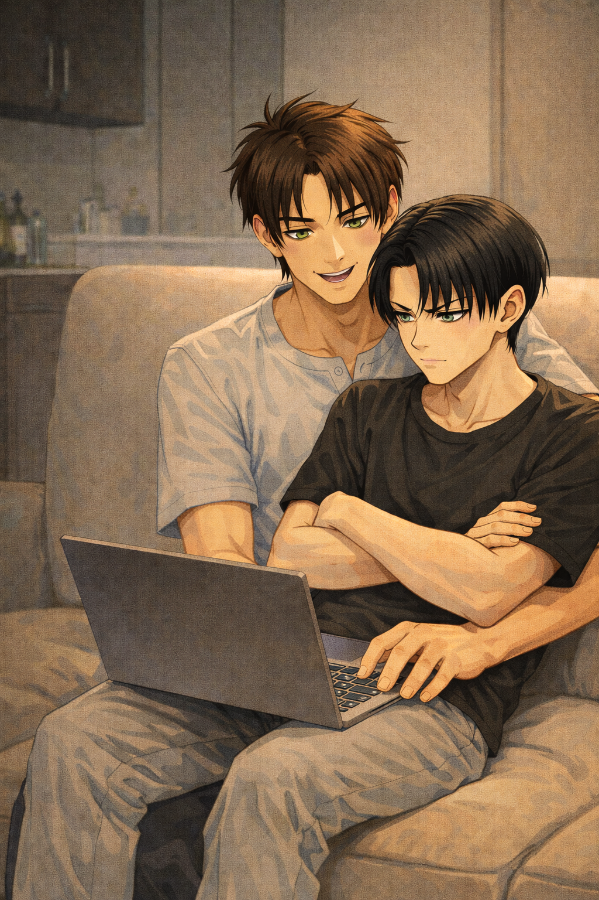

Psych ward

It started, as most of their problems did, with something profoundly stupid.
Eren had found an online “relationship stress assessment” while scrolling through what Levi strongly suspected was a forum moderated by teenagers with too much free time. He announced it with the kind of enthusiasm usually reserved for revolutions.
“It’s like those Vanity Fair couple quizzes,” he announced from the couch. “Answer honestly.”
Levi did not look up from the kitchen counter, where he was aggressively chopping vegetables that did not deserve it.
“No.”
“Levi, come here and answer the questions.”
Five minutes later, Levi was sitting on Eren's lap on the couch anyway.
The questions started harmlessly enough. Communication style. Conflict resolution. Emotional availability. Levi answered with dry efficiency. Eren answered like he was narrating a documentary.
“Do you experience discomfort when separated from your partner?”
Levi leaned back, crossing his arms.
“Define discomfort.”
“You’re not allowed to lawyer your way through this.”
“Then no.”
Eren looked at him. This was about to take a while.
When the results finally loaded, Eren leaned forward like he was about to receive a medical diagnosis instead of a quiz result written by someone with a username like heartboy97.
“High emotional interdependence,” he read. “Potential over-attachment. Boundary reinforcement recommended.”
Levi stayed quiet for a second, not because he was indifferent, but because he was thinking. He shifted slightly on Eren’s lap, fingers absently drawing patterns under the fabric of Eren’s shirt.
“Boundary reinforcement,” Eren repeated. “That sounds like padded walls.”
“It sounds like nonsense to me, heartboy97 was obviously never in a relationship.” Levi replied, but there was a faint curve to his mouth.
“It says we’re co-dependent.”
Levi finally looked at the screen.
“You went to get coffee yesterday.”
“And you texted me ‘update’ three times.”
Levi clicked his tongue softly.
“I wanted to know if the line was long.”
“You missed me.”
Levi didn’t answer right away. He adjusted his position again — still not moving off Eren.
“You were gone eighteen minutes.”
“You counted.”
A pause.
“Shut up.”
Eren’s expression shifted — softer, victorious.
“We’re going to end up institutionalized at this rate.”
Levi let out a quiet breath through his nose.
“You’d hate it.”
“Why?”
“You wouldn’t get special treatment.”
“I would absolutely get special treatment. I'd have you known I'm lovely.”
“You’d argue with the staff.”
“I would look incredible in a straitjacket.”
That made Levi actually laugh — soft, brief, real.
“You’d last a day.”
“Oh? And you’d be perfectly fine?”
Levi met his eyes then.
“No.”
That surprised them both.
“You wouldn’t?” Eren asked quietly.
“I’d be irritated.”
“Because?”
Levi hesitated — not defensive, just honest.
“Because you’d be in the next room and I’d know it.”
Eren went very still.
“That’s kind of the point.”
Levi tilted his head slightly.
“You obviously can handle better than me. Let’s test it then.”
“You’re serious.”
“You’re the one who said we’re headed for padded walls,” Levi replied. “Let’s see if we survive three days.”
Eren’s grin came back instantly.
“You just want to prove you’re fine.”
“I am fine.”
“You’re sitting on me.”
Levi didn’t move.
“Yes. And?”
“We’re on a three-meter couch.”
“So what if I’m sitting on you? It’s my place.”
Eren blinked. Completely thrown off.
“…That sounded territorial.”
“It was.”
A beat.
“Three days,” Eren said.
“Three days,” Levi agreed.
And that was how it began.
Intake desk.
Fluorescent lighting.
Clipboards that looked aggressively neutral.
Eren leaned forward like this was an actual life event.
“Name?”
“Eren Jäger.”
“Reason for admission?”
“Excessive attachment.”
Levi crossed his arms.
“To what?”
Eren didn’t hesitate. He pointed.
“Him.”
Levi refused to react. Which was, unfortunately, a reaction.
“And you?”
Levi exhaled slowly through his nose.
He could end this. He should end this.
“…Mutual.”
Eren beamed like he had just secured a lifelong victory.
Day One.
The facility smelled faintly of disinfectant and overbrewed coffee. The lighting was soft in theory, but unforgiving in practice. The waiting room chairs were arranged in a polite semicircle, as if emotional clarity could be achieved through geometry.
Eren looked around with unsettling enthusiasm. Levi sat perfectly still beside him.
“I like that it’s quiet,” Eren murmured.
“That’s rich, coming from you.” Levi replied.
A nurse called Levi’s name first.
Eren straightened immediately.
“You’ll be fine,” he said.
“I’m aware.”
Levi stood. He felt Eren’s eyes on him all the way down the corridor.
The therapist’s office was warmer. A lamp, some bookshelves. A plant that that looked suspiciously overwatered.
“This is a voluntary relational assessment?” the therapist asked.
“Correct.”
“And you believe there may be overdependence?”
Levi crossed one leg over the other.
“No.”
“Then why are you here?”
A pause.
“To confirm that.”
The therapist observed him for a moment too long.
“Describe what happens when you’re apart.”
Levi considered lying. He didn’t. He looked at the bookshelf instead of the therapist. Maybe he could downplay it. He almost did.
“It’s quiet,” he said at first.
“Quiet can be peaceful.”
“Not that kind.”
His jaw shifted slightly.
“It feels… dull.”
He searched for the word and hated that he had to.
“Like something is missing. Not dramatically. Just enough that I notice it constantly.”
The pen scratched softly against paper.
“Physically?”
Levi’s fingers curled slightly against the armrest.
“Sometimes.”
“How?”
Another pause. Longer this time.
“My chest tightens,” he admitted quietly. “Not panic. Not anxiety. Just… pressure.”
He exhaled once through his nose.
“Like I’m waiting.”
“Waiting for what?”
“For him to come back.”
The therapist didn’t interrupt.
“When he does,” Levi continued, voice even but softer now, “it eases immediately. Which is irritating.”
“Irritating?”
“I don’t like that it’s that obvious.”
A beat.
“And if he’s gone longer than expected?”
Levi’s jaw tightened again.
“I get… sharper.”
“Angry?”
“No.”
He corrected himself.
“Yes. A little.”
His gaze shifted back to the therapist.
“Not at him. At the space.”
“The space?”
“It feels wrong.”
That was the closest he would get to saying it hurts.
“Does it cause distress?”
Levi held still.
“…Yes.”
He didn’t look away this time.
Distress sounded fragile. He wasn’t fragile. But the ache was real.
When he returned to the waiting room, Eren stood immediately.
Too fast.
“You okay?”
“I was never not.”
Eren searched his face anyway.
“Did you tell them the truth?”
“Define truth.”
Eren huffed a quiet laugh.
“That it feels wrong when I’m not there.”
Levi held his gaze.
“Yes.”
Something in Eren’s expression softened.
“Good.”
Then it was Eren’s turn.
Levi sat back down.
The waiting room felt larger without him.
Irritatingly so.
Levi checked the clock. Once. Tried to analyze the surroundings. Played with his own hands. Then again.
He told himself it was observational and that they were fine.
When Eren finally returned, he looked bright-eyed and deeply satisfied.
“I may have overshared.”
“Shocking.”
“I told them it feels physical. Like missing a limb.”
Levi’s expression didn’t change.
“You're always dramatic.”
“Accurately dramatic.”
A beat.
Eren’s hand hovered briefly before sliding into Levi’s sleeve, fingers curling against his wrist.
Levi didn’t pull away.
Day Two.
The schedule insisted on “separate morning activities.”
Levi chose the reading room. Eren joined group discussion with visible reluctance.
“Don’t stare at me through the glass,” Levi said flatly.
“I won’t.”
He absolutely did.
The reading room was quiet in the sterile way institutions preferred.
Levi opened his book.
Turned a page.
Adjusted his posture.
It was fine.
Entirely fine.
From down the hall, faint laughter filtered through the wall.
Eren’s voice carried slightly higher than the others.
Levi read the same sentence twice.
Annoying.
An hour later, they crossed paths near the vending machine. Eren was holding a packaged biscuit.
“This reminded me of you.”
Levi raised an eyebrow.
“Explain.”
“It’s dry. Aggressively so. Like it resents moisture.”
Levi stared at him.
“You’re eating it.”
“I’m committed, I miss you.”
Eren took a bite. Immediately coughed.
“That’s almost as dry as your cooking babe.”
“Go see if someone else appreciates you,” Levi replied smoothly.
“Don't be a damn stone, you miss me too.”
Levi’s mouth twitched. Barely.
He hated that he enjoyed this.
Back in the common area, they sat at opposite ends of the couch. Deliberately.
Two minutes passed.
Eren slid closer without looking at him.
“You’re drifting.”
“Gravity,” Eren said.
“Yeah, right.”
Their shoulders brushed. Neither moved away.
Lunch.
The cafeteria smelled faintly of overcooked vegetables and institutional optimism. Levi examined his tray with quiet suspicion, Eren immediately reached for the ketchup bottle.
“You haven’t even tasted it,” Levi said.
“I don’t need to. I have instincts.”
Eren squeezed a dramatic amount of ketchup onto his food.
“You’re not finished with that?” Levi asked, watching the red spread like a crime scene.
“What.”
“If it’s not drowned in ketchup, you don’t eat it anyway.”
“That’s not true. It's survival at some point, when you cook I feel like dying with the dryness you provide”
“You have no palate. You also have no will to live, otherwise you'd be a bit less of an ass in this very moment.”
“I absolutely do.”
“You think ‘spicy’ means ‘more sauce.’”
Eren stared at him in offense.
“You eat things that taste like air and look like depression.”
Levi looked at him flatly.
“You’re eating diabetes.”
“And you’re judging me in a psych ward.”
A nurse passed by.
“Are you comfortable sitting apart?”
They both looked down.
Their knees were already touching under the table.
“Yes,” Eren answered smoothly. “We’re demonstrating independence.”
“This is independent,” Levi added calmly, not moving his knee.
Under the table, Eren’s foot hooked around Levi’s ankle.
Levi didn’t pull away. He pressed back once.
Night.
Separate beds. Exactly one meter apart.
Levi lay on his back, staring at the ceiling.
“You okay?” Eren asked softly.
“Yes.”
“Be honest.”
A pause.
“…No, this is shit.”
Eren shifted in the dark.
“You miss me? Do you still love me?”
“You are one meter away.”
“That’s not a denial.”
Silence.
“You’re loud when you breathe, but I love you.” Levi added.
“Don't be a jerk.”
Levi didn’t answer.
A moment later, fingers reached across the space.
Levi let them hover.
Then met them halfway.
Ridiculous.
Eren’s thumb brushed once against his knuckles.
“Better?”
“…Yes.”
Day Three.
Eren looked personally offended that no one had offered him a straitjacket.
“I feel like the commitment level here is low,” he muttered.
“You are not wearing a straitjacket,” Levi replied, without looking up.
“That’s disappointing.”
“You would not survive the aesthetic. You already forget half your papers at home for stylish purposes.”
The final evaluation took place in a brighter office. Too bright. As if clarity could be forced through lighting.
“You both exhibit high emotional attunement,” the psychiatrist said carefully.
“Thanks, we practiced,” Eren answered.
“That wasn’t a compliment,” Levi added.
“It wasn’t an insult either,” the psychiatrist corrected.
Eren leaned forward.
“So we’re not… unhealthy?”
“You function independently,” the psychiatrist replied. “You maintain autonomy. You simply… prefer proximity.”
Levi nodded once.
“Proximity is efficient.”
“You say that like this is a supply chain issue,” Eren said.
The psychiatrist made a note. Slowly.
“Do you experience anxiety when separated?”
Levi answered first.
“No.”
Eren tilted his head.
“Not anxiety. Just… irritation.”
“Because?” the psychiatrist prompted.
“Because I want updates,” Eren said simply. “Like. If he leaves the apartment, I want to know where he is. Not because I think he’ll disappear. Just because my brain goes—”
He made a vague spiraling gesture with his hand.
“—‘What’s he doing right now.’”
Levi didn’t contradict him.
“Same,” he said.
A pause.
“Do you believe this is pathological?” the psychiatrist asked.
Eren glanced at Levi.
“He thinks I’m a little yoo-hoo.”
“You are,” Levi replied calmly. “If they kept you longer, I would not be surprised.”
“You’d visit.”
“I’d evaluate. And check if you try to find a better match.”
The psychiatrist coughed, possibly to hide a smile.
“You don’t appear dependent,” they concluded. “You appear… attached.”
“Excessively?” Eren asked.
“Enthusiastically.”
Eren looked deeply pleased with that.
Discharge.
Outside, the doors slid shut behind them.
“So,” Eren said, stretching dramatically, “we’re officially sane.”
“Me, yes. You, it's still debatable.”
“I didn’t even get institutionalized properly.”
“You can try harder next time.”
Eren bumped his shoulder against Levi’s.
“Admit it. You missed me yesterday.”
“You were in the next room.”
“That’s not a denial.”
Levi exhaled.
“You are easier to monitor within arm’s reach.”
“That’s romantic.”
“It’s practical.”
Eren reached for his hand anyway.
Levi let him.
They walked toward the street like two people who could absolutely function alone —
and simply chose not to.
Love was weird sometimes.
But always worth it, if shared with a brat.